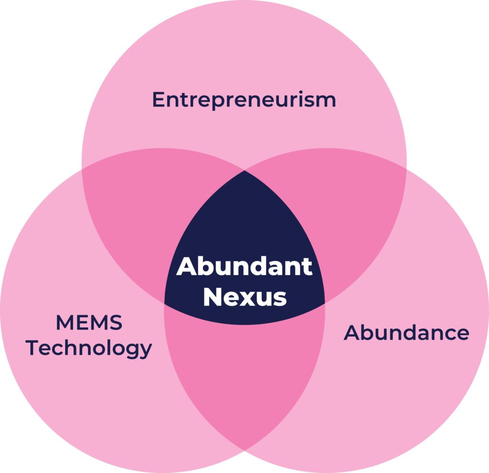
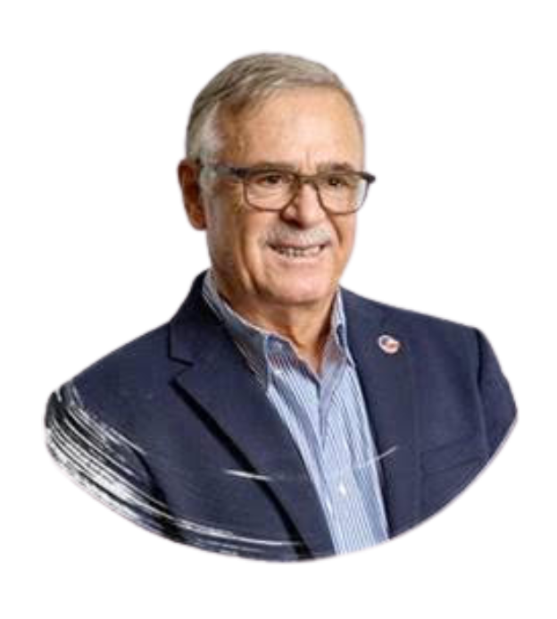
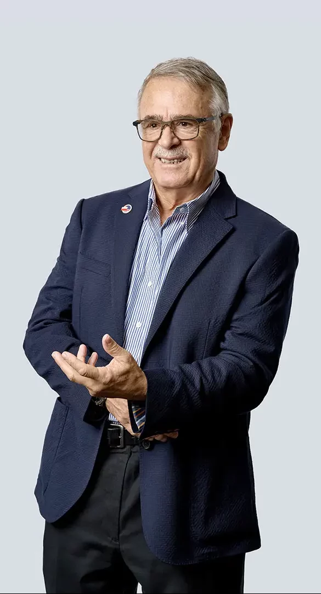

The Abundant Nexus
Convergence of MEMS, Entrepreneurism and Abundance
This event is motivated by a deep commitment to pay tribute to the enduring legacy of Dr. Janusz Bryzek who passed away in November 2022. Janusz was a renowned pioneer in the field of micro-electromechanical systems (MEMS). He commercialized his MEMS passion with 11 companies over his career: from pressure sensors to multiplexers, IMUs to ultrasonic imagers. He was an optimistic technology enthusiast who saw the abundance of ubiquitous low-cost MEMS devices as a means of improving the lives of everyone. In short, he operated at the convergence of MEMS, Entrepreneurism, and Abundance.
This event is motivated by a deep commitment to pay tribute to the enduring legacy of Dr. Janusz Bryzek who passed away in November 2022. Janusz was a renowned pioneer in the field of micro-electromechanical systems (MEMS). He commercialized his MEMS passion with 11 companies over his career: from pressure sensors to multiplexers, IMUs to ultrasonic imagers. He was an optimistic technology enthusiast who saw the abundance of ubiquitous low-cost MEMS devices as a means of improving the lives of everyone. In short, he operated at the convergence of MEMS, Entrepreneurism, and Abundance.
We invite you to join us and celebrate Janusz’s legacy as we explore this convergence of MEMS technologies, entrepreneurship, and abundance. Speakers will include Peter Diamandis, the founder of XPRIZE and a data-driven optimist, and Benedetto Vigna, the CEO of Ferrari. You will have the opportunity to engage with colleagues, academics, entrepreneurs, and thought leaders as we delve into MEMS technology, its commercialization, and its profound impact on our world. We will revisit the remarkable growth of MEMS research and commercialization, explore what distinguishes successful startups, discuss the latest research trends, and understand how MEMS technology has saved countless lives worldwide.
Join us for a thought-provoking panel discussion on the current state of MEMS—whether it is mature, experiencing decline, or evolving in novel ways. Finally, conclude the evening by networking with fellow attendees over drinks and hors d'oeuvres.
By attending this event, you will gain insights into:
- The historical evolution of MEMS from a concept to an exponential technology.
- The current cutting-edge applications and growth prospects of MEMS.
- Strategies for evaluating the viability of your ideas and positioning them for seed and Series A funding.
- The concept of abundance and how to apply it to your startup.
We invite you to join us and celebrate Janusz’s legacy as we explore this convergence of MEMS technologies, entrepreneurship, and abundance. Keynote Speakers will include Dr. Peter Diamandis, the founder of XPRIZE and a data-driven optimist, Benedetto Vigna, the CEO of Ferrari, and Sandeep Akkaraju, Co-Founder and CEO of Exo Imaging. You will have the opportunity to engage with colleagues, academics, entrepreneurs, and thought leaders as we delve into MEMS technology, its commercialization, and its profound impact on our world. We will revisit the remarkable growth of MEMS research and commercialization, explore what distinguishes successful startups, discuss the latest research trends, and understand how MEMS technology has saved countless lives worldwide.
Join us for a thought-provoking panel discussion on the current state of MEMS—whether it is mature, experiencing decline, or evolving in novel ways. Finally, conclude the evening by networking with fellow attendees over drinks and hors d'oeuvres.
By attending this event, you will gain insights into:
- The historical evolution of MEMS from a concept to an exponential technology.
- The current cutting-edge applications and growth prospects of MEMS.
- Strategies for evaluating the viability of your ideas and positioning them for seed and Series A funding.
- The concept of abundance and how to apply it to your startup.
Origin Story: The Abundant Nexus
Dr. Janusz Bryzek (1947 – 2022) was at the nexus of MEMS, entrepreneurism, and abundance. Janusz was always driven. As a young engineer in the Soviet Bloc, Janusz set his sights on escaping to the West in the 1970’s. Through careful planning and sleight of hand, the Bryzek family of four made it safely to the US, but had to start afresh with few connections and only $300 in their pocket. Leveraging his engineering connections, Janusz quickly found work. But his entrepreneurial ambitions motivated him to look for new opportunities. Together with Kurt Petersen and Joe Mallon, Janusz co-founded Novasensor in 1985. The trio leveraged the marketing prowess of Roger Grace to grow the fledgling company. And grow it did! Novasensor is one of the first successful MEMS-based companies and a major contender in the pressure sensor market. They have now delivered over 800 million sensors worldwide. Ever the entrepreneur and MEMS maverick, Janusz went on to cofound another 10 companies commercializing MEMS devices ranging from pressure sensors to accelerometers, from gyros to resonators, and from micromirrors to pMUTs (Transparent Networks, LV Sensors, Jyve, Exo Imaging, etc.).
Despite all his credentials as a technologist and entrepreneur, most remember Janusz’ optimism and desire to apply technology for the benefit of all humanity. He was a firm believer in the concept that a rising tide lifts all boats, and he applied himself to making sure his technologies amplified this tide. This philosophy became epitomized by the concept of abundance. Abundance can be defined as having a positive and optimistic attitude towards life and the future, where individuals believe that there are ample opportunities and resources available to them, and that with effort and innovation, they can create a better future for themselves and others. Janusz fully embraced that concept in both his personal life and his business career, and paid it forward to family, friends, colleagues and the countless companies that he advised and encouraged.
Exo Imaging was Janusz’ final startup, and perhaps his ultimate expression of abundance. 75% of the world does not have ready access to medical imaging. Janusz and fellow cofounders Sandeep Akkaraju, Yusuf Haque, and John Kokulis imagined applying the exponential scale of MEMS pMUT (piezoelectric micromachined ultrasonic transducer) technology to enable low cost, portable ultrasound probes for the price of a cell phone. Exo is poised to transform medical imaging, bringing Janusz’ vision to life.
Origin Story
The Abundant Nexus
Dr. Janusz Bryzek (1947 – 2022) was at the nexus of MEMS, entrepreneurism, and abundance. Janusz was always driven. As a young engineer in the Soviet Bloc, Janusz set his sights on escaping to the West in the 1970’s. Through careful planning and sleight of hand, the Bryzek family of four made it safely to the US, but had to start afresh with few connections and only $300 in their pocket. Leveraging his engineering connections, Janusz quickly found work. But his entrepreneurial ambitions motivated him to look for new opportunities. Together with Kurt Petersen and Joe Mallon, Janusz co-founded Novasensor in 1985. The trio leveraged the marketing prowess of Roger Grace to grow the fledgling company. And grow it did! Novasensor is one of the first successful MEMS-based companies and a major contender in the pressure sensor market. They have now delivered over 800 million sensors worldwide. Ever the entrepreneur and MEMS maverick, Janusz went on to cofound another 10 companies commercializing MEMS devices ranging from pressure sensors to accelerometers, from gyros to resonators, and from micromirrors to pMUTs (Transparent Networks, LV Sensors, Jyve, Exo Imaging, etc.).
Despite all his credentials as a technologist and entrepreneur, most remember Janusz’ optimism and desire to apply technology for the benefit of all humanity. He was a firm believer in the concept that a rising tide lifts all boats, and he applied himself to making sure his technologies amplified this tide. This philosophy became epitomized by the concept of abundance. Abundance can be defined as having a positive and optimistic attitude towards life and the future, where individuals believe that there are ample opportunities and resources available to them, and that with effort and innovation, they can create a better future for themselves and others. Janusz fully embraced that concept in both his personal life and his business career, and paid it forward to family, friends, colleagues and the countless companies that he advised and encouraged.
Exo Imaging was Janusz’ final startup, and perhaps his ultimate expression of abundance. 75% of the world does not have ready access to medical imaging. Janusz and fellow cofounders Sandeep Akkaraju, Yusuf Haque, and John Kokulis imagined applying the exponential scale of MEMS pMUT (piezoelectric micromachined ultrasonic transducer) technology to enable low cost, portable ultrasound probes for the price of a cell phone. Exo is poised to transform medical imaging, bringing Janusz’ vision to life.